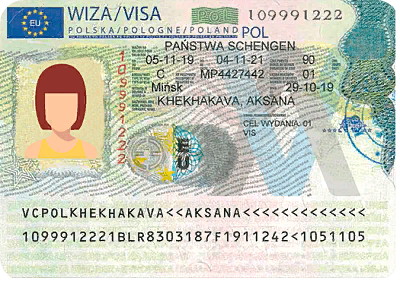

ДЕЛОВАЯ ВИЗА В ПОЛЬШУ

Информация о визе
Тип подачи:
личнаяСрок действия:
до 5 летДней прибывания по визе:
90 дней в полугодииПериод оформления документов:
1 день – 1 месяцСрок изготовления визы:
от 3 до 14 рабочих днейКонсульский сбор:
35 евроУсловия для открытия визы в Польшу
Однократная деловая виза открывается, если не было Шенген виз в течение последних 3-ёх лет;
Деловую визу на 1 год возможно открыть, если была любая Шенген виза в течение последних 3-ёх лет;
Деловая виза на 2 года открывается, если была польская деловая виза или польская виза на 1 год другого типа в течение последних 3-ёх лет;
Деловая виза на 3–5 лет возможна, если были 2 польские деловые визы в течение последних 3-ёх лет.
Деловую визу на 1 год возможно открыть, если была любая Шенген виза в течение последних 3-ёх лет;
Деловая виза на 2 года открывается, если была польская деловая виза или польская виза на 1 год другого типа в течение последних 3-ёх лет;
Деловая виза на 3–5 лет возможна, если были 2 польские деловые визы в течение последних 3-ёх лет.
Как забронировать и купить тур?
Вы можете выбрать курорт и отель самостоятельно, воспользовавшись поиском на нашем сайте, и забронировать тур в режиме онлайн. Также вы можете позвонить нам по телефонам или придти к нам в офис, где наши менеджеры подберут подходящий для Вас тур. После заключения договора, Вы вносите 50% предоплаты, а затем оплату всего тура после подтверждения бронирования в течение 3 банковских дней*.
*на туры по специальным акциям и предложениям могут распространятся другие правила оплаты, такие как рассрочка и поэтапная оплата.
*на туры по специальным акциям и предложениям могут распространятся другие правила оплаты, такие как рассрочка и поэтапная оплата.
Где открыть шенген в Польшу?
Открыть деловую визу в Польшу в Гродно с компанией"Студия отдыха" – это безопасно, быстро, надёжно и недорого! Цена на бизнес-визу в Польшу зависит от срока, на который выдается виза. Также мы предлагаем услуги медецинской страховки и качественных фото для ваших документов.